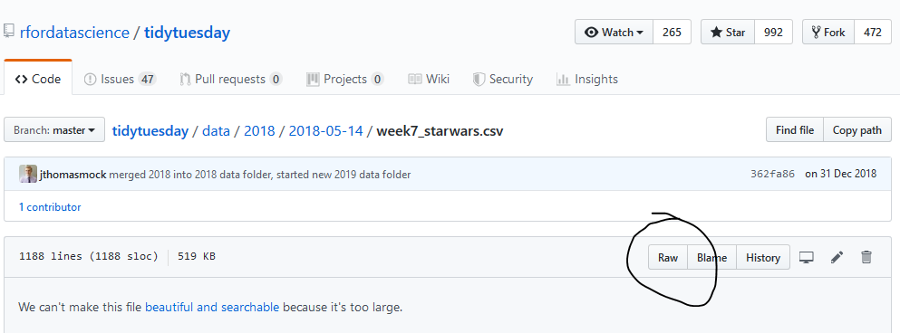

StatKons1: Open Datasets
In diesem Dokument findet ihr verschiedene Wege und Quellen, um an Datensätze zu gelangen.
in R
In R gibt es vordefinierte Datensätze, welche gut abrufbar sind. Beispiele sind:
- sleep
- USAccDeaths
- USArrests
- Titanic
data() # erzeugt eine Liste mit den Datensätzen, welche in R verfügbaren sind
head(chickwts) weight feed
1 179 horsebean
2 160 horsebean
3 136 horsebean
4 227 horsebean
5 217 horsebean
6 168 horsebeanstr(chickwts)'data.frame': 71 obs. of 2 variables:
$ weight: num 179 160 136 227 217 168 108 124 143 140 ...
$ feed : Factor w/ 6 levels "casein","horsebean",..: 2 2 2 2 2 2 2 2 2 2 ...Kaggle
Auf Kaggle findet ihr öffentlich zugängliche Datensätze. Einzig was ihr tun müsst, ist euch registrieren. Beispiele sind:
# Load packages and data
data_911 <- read_delim("datasets/statistik/911.csv", delim = ",")
str(data_911)spec_tbl_df [99,492 × 9] (S3: spec_tbl_df/tbl_df/tbl/data.frame)
$ lat : num [1:99492] 40.3 40.3 40.1 40.1 40.3 ...
$ lng : num [1:99492] -75.6 -75.3 -75.4 -75.3 -75.6 ...
$ desc : chr [1:99492] "REINDEER CT & DEAD END; NEW HANOVER; Station 332; 2015-12-10 @ 17:10:52;" "BRIAR PATH & WHITEMARSH LN; HATFIELD TOWNSHIP; Station 345; 2015-12-10 @ 17:29:21;" "HAWS AVE; NORRISTOWN; 2015-12-10 @ 14:39:21-Station:STA27;" "AIRY ST & SWEDE ST; NORRISTOWN; Station 308A; 2015-12-10 @ 16:47:36;" ...
$ zip : num [1:99492] 19525 19446 19401 19401 NA ...
$ title : chr [1:99492] "EMS: BACK PAINS/INJURY" "EMS: DIABETIC EMERGENCY" "Fire: GAS-ODOR/LEAK" "EMS: CARDIAC EMERGENCY" ...
$ timeStamp: POSIXct[1:99492], format: "2015-12-10 17:40:00" "2015-12-10 17:40:00" ...
$ twp : chr [1:99492] "NEW HANOVER" "HATFIELD TOWNSHIP" "NORRISTOWN" "NORRISTOWN" ...
$ addr : chr [1:99492] "REINDEER CT & DEAD END" "BRIAR PATH & WHITEMARSH LN" "HAWS AVE" "AIRY ST & SWEDE ST" ...
$ e : num [1:99492] 1 1 1 1 1 1 1 1 1 1 ...
- attr(*, "spec")=
.. cols(
.. lat = col_double(),
.. lng = col_double(),
.. desc = col_character(),
.. zip = col_double(),
.. title = col_character(),
.. timeStamp = col_datetime(format = ""),
.. twp = col_character(),
.. addr = col_character(),
.. e = col_double()
.. )
- attr(*, "problems")=<externalptr> Tidytuesday
Tidytuesday ist eine Plattform, in der wöchentlich - jeden Dienstag - einen öffentlich zugänglichen Datensatz publiziert. Dieses Projekt ist aus der R4DS Online Learning Community und dem R for Data Science Lehrbuch hervorgegangen. Beispiele sind:
- Women in the Workplace
- Dairy production & Consumption
- Star Wars Survey
- Global Coffee Chains
- Malaria Deaths
- …
Download via Github - 1. Möglichkeit
Geht zum File, welches ihr herunterladen wollt
Klickt auf das File (.csv, .xlsx etc.), um den Inhalt innerhalb der GitHub Benutzeroberfläche anzuzeigen
- Klickt mit der rechten Maustaste auf den Knopf “raw”

- (Ziel) Speichern unter…
Download via Github - 2. Möglichkeit
# Beachtet dabei, dass ihr die URL zum originalen (raw) Datensatz habt
star_wars <- read_csv("https://raw.githubusercontent.com/rfordatascience/tidytuesday/master/data/2018/2018-05-14/week7_starwars.csv", locale = readr::locale(encoding = "latin1")) #not working yet opendata.swiss
Auf opendata.swiss sind offene, frei verfügbare Daten der Schweizerischen Behörden zu finden. opendata.swiss ist ein gemeinsames Projekt von Bund, Kantonen, Gemeinden und weiteren Organisationen mit einem staatlichen Auftrag. Beispiele sind:
Open Data Katalog Stadt Zürich
Auf der Seite der Stadt Zürich Open Data findet ihr verschiedene Datensätze der Stadt Zürich. Spannend daran ist, dass die veröffentlichten Daten kostenlos und zur freien - auch kommerziellen - Weiterverwendung zur Verfügung. Beispiele sind:
- Bevölkerung nach Bildungsstand, Jahr, Alter und Geschlecht seit 1970
- Luftqualitätsmessungen
- Häufigste Hauptsprachen
- …
# lade die Datei "Häufigste Sprachen"
urlfile = "https://data.stadt-zuerich.ch/dataset/bfs_ste_bev_hauptsprachen_top50_od3011/download/BEV301OD3011.csv"
dat_lang <- read_delim(url(urlfile), delim = ",", col_names = T)
head(dat_lang)# A tibble: 6 × 7
Sprache AntBev AnzBev untAntBevKI obAntBevKI untAnzBevKI obAnzBevKI
<chr> <dbl> <dbl> <dbl> <dbl> <dbl> <dbl>
1 Deutsch 74.9 259670 74.4 75.3 257970 261380
2 Englisch 13.5 46970 13.2 13.9 45630 48320
3 Italienisch 6.2 21390 5.9 6.4 20470 22310
4 Französisch 4.9 17060 4.7 5.2 16230 17890
5 Spanisch 4.3 14940 4.1 4.5 14140 15740
6 Serbokroatisch 3.1 10900 2.9 3.3 10220 11590